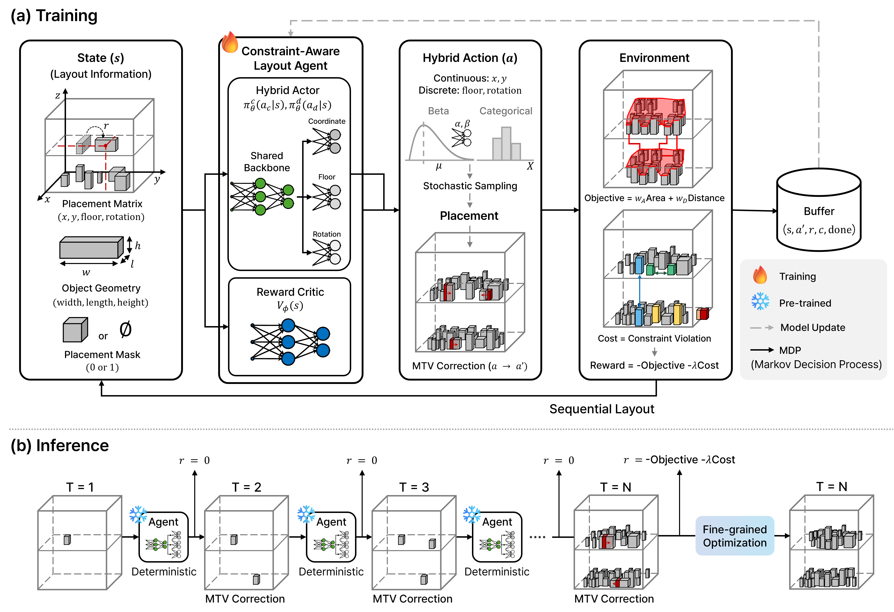
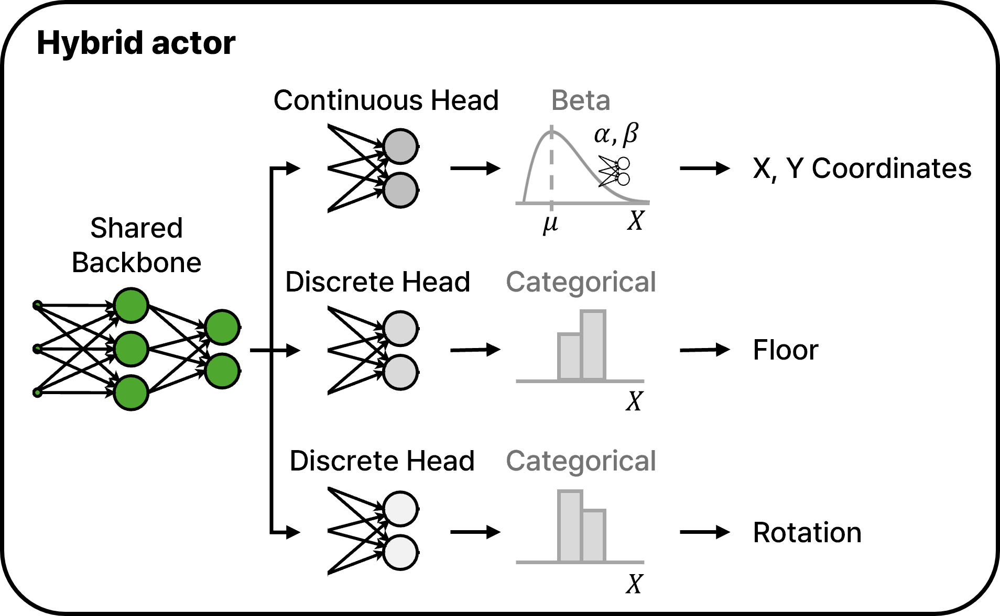
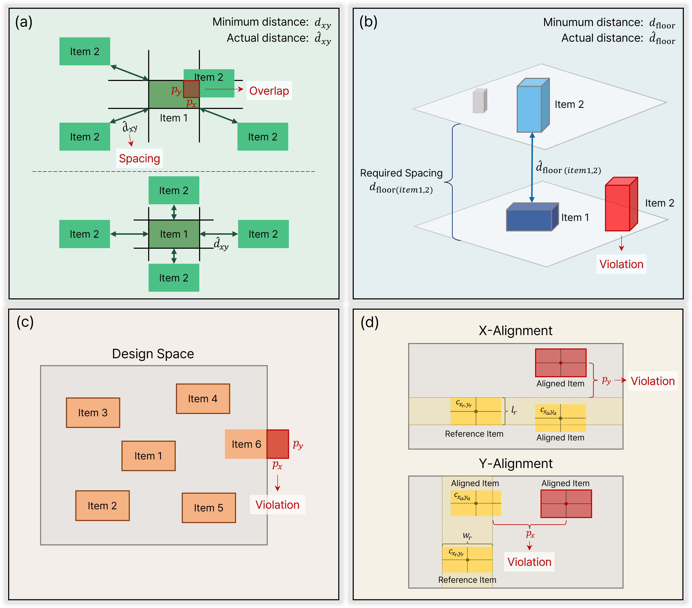
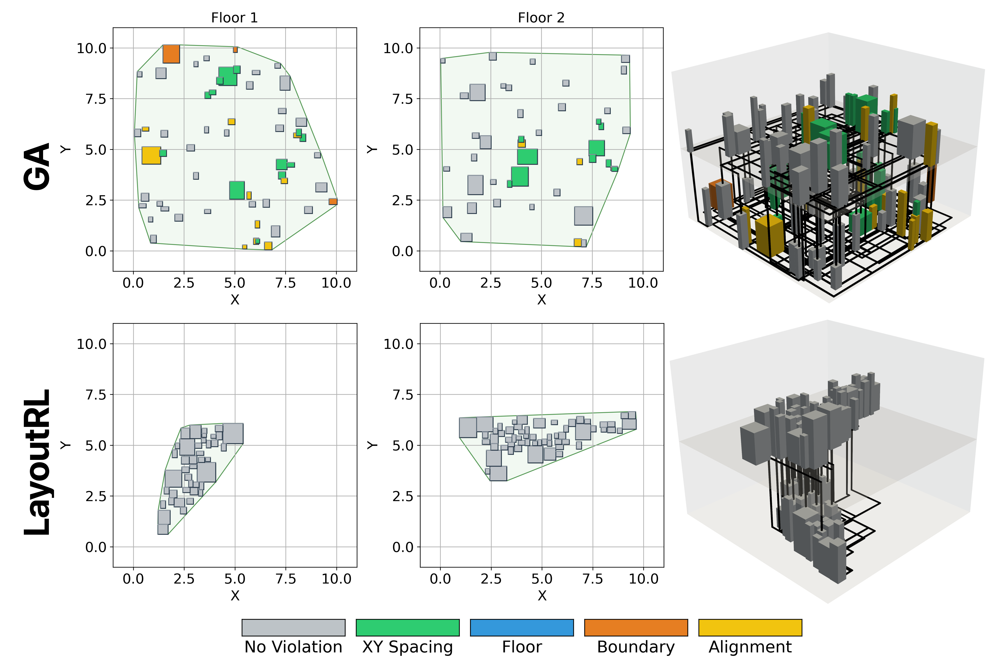
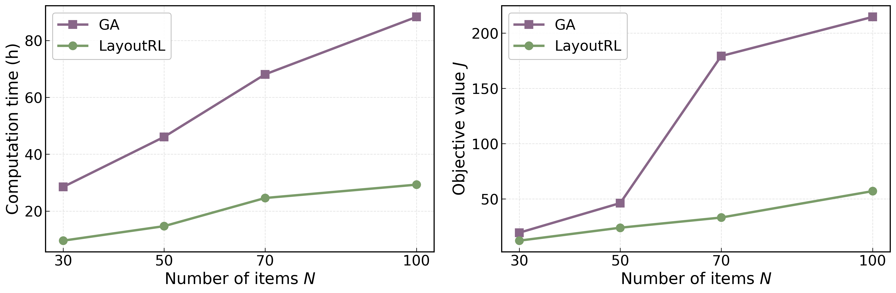
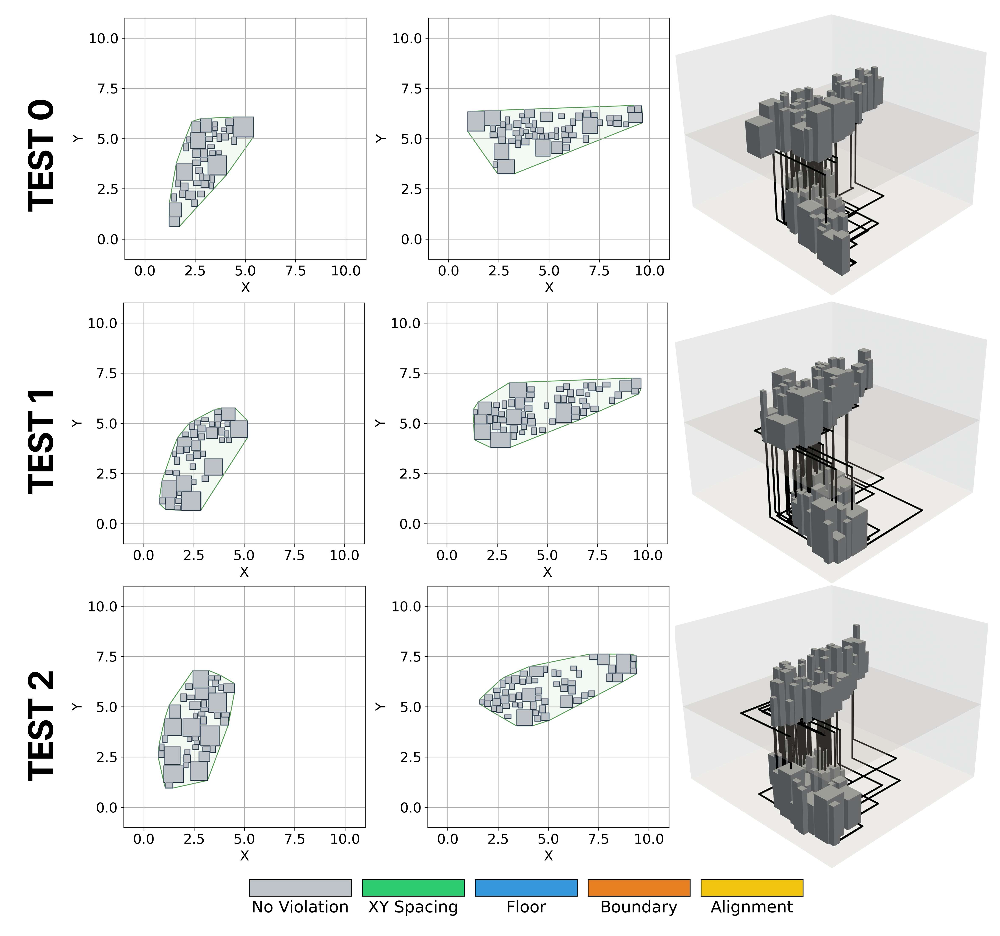

LayoutRL

Large-scale 3D layout optimization requires simultaneous satisfaction of multiple heterogeneous constraints while optimizing a multi-component objective over a mixed-variable design space. Existing metaheuristic approaches suffer from exponential search space growth with problem scale, while most deep reinforcement learning (DRL) methods adopt either purely continuous or discrete action spaces that fail to capture the mixed-variable structure of real-world 3D placement problems. We present LayoutRL, a constraint-aware DRL framework integrating mixed variables within a unified hybrid policy. As non-overlap constraints are inherently difficult to satisfy under sparse rewards in continuous action spaces, a minimum translation vector (MTV)-based action correction deterministically mitigates non-overlap violations at each step, while a Beta distribution ensures numerical stability for MTV-corrected actions near boundaries. To further improve solution quality, we introduce a fine-grained optimization stage that refines the DRL-generated solution. Experiments across N = 30, 50, 70, 100 object scales demonstrate that LayoutRL achieves zero constraint violations at all scales. Even at N = 100, where the metaheuristic baseline fails to produce feasible solutions, LayoutRL consistently achieves superior results, demonstrating its scalability and generalization across 100 test instances.
A unified policy that jointly handles continuous placement coordinates and discrete floor / rotation decisions, faithfully reflecting the mixed-variable structure of 3D placement.
Deterministically enforces non-overlap during training. Action relabeling preserves PPO consistency, and a Beta-distributed policy guarantees numerical stability near action boundaries.
Uses the RL-generated solution as a warm start for local refinement, converging efficiently to high-quality, constraint-satisfying configurations.

A shared encoder branches into a Beta head for continuous placements (x, y) and categorical heads for floor index and rotation, allowing the policy to express precise spatial decisions and discrete structural choices simultaneously.
Four geometric rules govern feasibility: (a) XY-spacing, (b) floor-spacing, (c) boundary, and (d) alignment. Non-overlap is handled separately via MTV correction; the remaining rules enter the reward as structured cost signals.

Across N = 30, 50, 70, 100 object scales, LayoutRL attains zero constraint violations while consistently outperforming metaheuristic baselines—including the large-scale N = 100 regime where baselines fail to produce feasible solutions.



@article{kim2026layoutrl,
title = {Constraint-Aware Large-Scale 3D Layout Optimization
via Hybrid Deep Reinforcement Learning},
author = {Kim, Jiyong and Kim, Seokjun and Kang, Namwoo},
journal = {Preprint},
year = {2026}
}